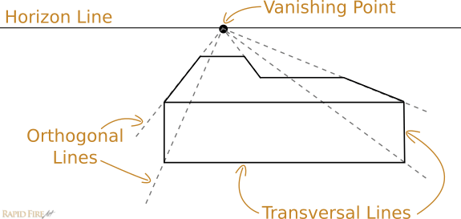
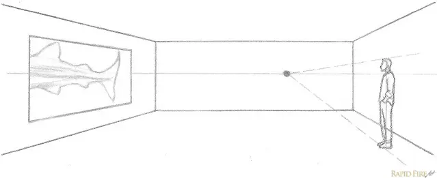

En esta lección, presentaré la perspectiva lineal de uno y dos puntos. El dibujo en perspectiva nos permite expresar un espacio tridimensional sobre una superficie bidimensional.
A continuación se presentan algunos términos que encontrará a lo largo de esta lección:
El punto o los puntos donde las líneas paralelas parecen converger y desaparecer. Dicho de otro modo, es el punto o los puntos donde se unen las líneas ortogonales.
Esta línea imaginaria representa la distancia más lejana en el fondo. En el dibujo en perspectiva, la línea del horizonte es la altura de los ojos del espectador. Por lo tanto, cuando los objetos están centrados en la línea del horizonte, están a la altura de los ojos. Si se coloca un objeto debajo de la línea del horizonte, el espectador lo verá desde arriba, mientras que si se coloca un objeto por encima, se crea la ilusión de que flota sobre la cabeza del espectador.
Las líneas que se dirigen hacia los puntos de fuga. Estas líneas ayudan a crear la ilusión de profundidad y distancia en un dibujo.
Las líneas que son perpendiculares a las líneas ortogonales y paralelas a la línea del horizonte. Estas líneas ayudan a definir la altura y la anchura de los objetos en el dibujo.
La perspectiva de un punto es la más fácil de aprender porque solo tiene un punto de fuga. En la imagen de abajo, todas las líneas de perspectiva de la escena se originan en un único punto de fuga en la línea del horizonte.
1. Dibuja la línea del horizonte y el punto de fuga.
2. Dibuja las líneas ortogonales que se dirigen al punto de fuga.
3. Dibuja las líneas transversales para definir la altura y la anchura de los objetos.
4. Añade detalles y sombreado para completar el dibujo.
La perspectiva de dos puntos es un poco más avanzada que la de un punto, ya que utiliza dos puntos de fuga en la línea del horizonte. Este tipo de perspectiva es útil para dibujar objetos en ángulo, como edificios o cajas.
1. Dibuja la línea del horizonte y los dos puntos de fuga.
2. Dibuja las líneas ortogonales que se dirigen a ambos puntos de fuga.
3. Dibuja las líneas transversales para definir la altura y la anchura de los objetos.
4. Dibuje dos línea ortogonales a el dibujo.
5. Agregué a la persona
6. Agregué a la persona 2
7. Agregué a la persona 3
8. Agregué a la persona 4
9. Añade detalles y sombreado para completar el dibujo.